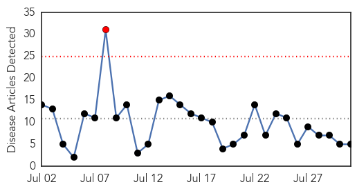
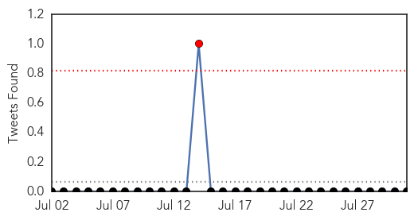
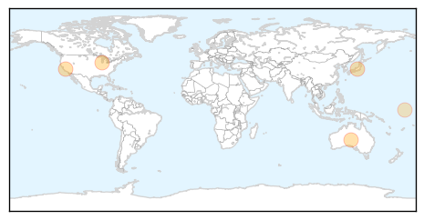
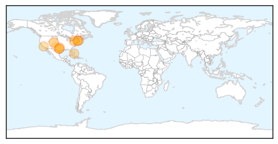

Influenza
30-Day Web Trend
1 alerts, 0 warnings

30-Day Twitter Trend
0 alerts, 0 warnings

Article Locations
Article Confidences
Top Articles:
Top Tweets:
-
No tweets found for Jul 31, 2015
West Nile Virus
30-Day Web Trend
10 alerts, 3 warnings

30-Day Twitter Trend
4 alerts, 0 warnings

Article Locations
Article Confidences

Top Articles:
- 0.989
- Drought’s effect on West Nile uncertain
- 0.987
- West Nile Virus positive traps reported in DeSoto, Hutchins
- 0.979
- Mosquitoes Infected with West Nile Virus in West and Southeast
- 0.976
- Suffolk health officials recommend suspending some activities at Blydenburgh County Park after West Nile find
- 0.965
- Officials: Moderate risk for West Nile virus in Boston area
- 0.940
- West Nile virus: Infected mosquitoes test positive for the illness in Fremont
- 0.907
- Tarrant County reports first human West Nile case
- 0.875
- Official: Mosquito-borne diseases could hit state 'any time now'
- 0.820
- West Nile virus found in two mosquito pool samples
- 0.813
- West Nile mosquitoes found in Longmont
- 0.704
- Mosquito numbers high, West Nile risk fairly low
- 0.674
- Pennsylvania reports year's 1st West Nile case
- 0.513
- Lubbock mosquito samples test positive for West Nile
Top Tweets:
- 0.573
- Flavivirus news: West Nile virus: Infected mosquitoes test positive for the illness in Fremont ... http://t.co/HhIk6YEiB1 pathogenposse
- 0.573
- Flavivirus news: West Nile virus: Infected mosquitoes test positive for the illness in Fremont ... http://t.co/DHCMsq7OgF pathogenposse